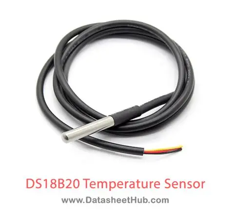

Identificação
| Nome do sensor | DS18B20 |
|---|---|
| Categoria | Temperatura |
| Tipo de sinal | Digital — barramento 1-Wire (Dallas/Maxim) |
Conceito
O DS18B20 é um termômetro digital de alta confiabilidade fabricado pela Maxim Integrated (hoje Analog Devices). Diferente de sensores analógicos como o LM35, ele realiza a conversão da temperatura internamente e entrega o valor já em formato digital, o que elimina erros causados por ruído elétrico no cabo. Sua principal característica é possuir um número de série de 64 bits gravado na fábrica, permitindo que dezenas de sensores compartilhem o mesmo par de fios e ainda assim sejam identificados individualmente. A versão encapsulada em tubo de aço inoxidável à prova d'água é a mais comum em aplicações industriais e de monitoramento de líquidos.

Princípio de funcionamento
Internamente, o DS18B20 utiliza dois osciladores: um de baixo coeficiente de temperatura, que serve de referência estável, e outro cuja frequência varia fortemente com a temperatura. Um contador compara o número de pulsos gerados por ambos durante uma janela fixa de tempo; a diferença acumulada é proporcional à temperatura absoluta e é convertida em um valor digital com sinal, em complemento de dois. O resultado é armazenado em um registrador de memória (scratchpad) de 2 bytes, que o mestre lê pelo barramento. A resolução é configurável entre 9 e 12 bits, e o tempo de conversão cresce com a resolução escolhida.
Principais especificações técnicas
| Faixa de medição | -55 °C a +125 °C |
|---|---|
| Precisão | ±0,5 °C entre -10 °C e +85 °C |
| Resolução | Configurável de 9 a 12 bits (0,5 °C a 0,0625 °C) |
| Tempo de conversão | Até 750 ms em 12 bits; 94 ms em 9 bits |
| Tensão de alimentação | 3,0 V a 5,5 V CC |
| Identificação | Número de série exclusivo de 64 bits gravado em ROM |
| Alarmes | Registradores TH e TL não voláteis para limites de temperatura |
| Modo parasita | Permite operar apenas com 2 fios (dados e GND) |
| Encapsulamentos | TO-92, SOIC, µSOP e sonda selada em aço inox |
Tipo de sinal
Digital — barramento 1-Wire (Dallas/Maxim)
O DS18B20 se comunica pelo protocolo 1-Wire, no qual dados e sincronismo trafegam por um único condutor com resistor de pull-up de 4,7 kΩ. O microcontrolador atua como mestre e cada sensor como escravo, endereçado pelo seu número de série de 64 bits. Isso permite montar redes com dezenas de pontos de medição em um mesmo cabo, com dezenas de metros de comprimento — uma vantagem decisiva em plantas industriais. No modo de alimentação parasita, o sensor extrai energia da própria linha de dados durante os períodos de nível alto, dispensando o fio de VCC.
Aplicações industriais e IoT
- Monitoramento de temperatura de líquidos em tanques, caldeiras e trocadores de calor;
- Controle térmico de câmaras frigoríficas e processos alimentícios;
- Medição de temperatura de mancais e motores para manutenção preditiva;
- Redes de sensores distribuídos em estufas e sistemas de climatização (HVAC);
- Monitoramento térmico de baterias e sistemas fotovoltaicos;
- Instrumentação de bancadas de ensaio e laboratórios.
Exemplo de utilização em um projeto
Em um sistema de manutenção preditiva, várias sondas DS18B20 seladas são fixadas nos mancais e no redutor de um robô articulado. Todas compartilham o mesmo cabo de três vias ligado a um Arduino, que identifica cada sonda pelo endereço 1-Wire. As leituras são enviadas a cada minuto para um servidor, que traça a curva térmica de cada junta. Um aumento gradual e persistente da temperatura em um dos mancais indica desgaste do rolamento e gera uma ordem de manutenção antes que ocorra a falha.
#include <OneWire.h>
#include <DallasTemperature.h>
OneWire barramento(2); // pino de dados
DallasTemperature sensores(&barramento);
void setup() {
Serial.begin(9600);
sensores.begin();
sensores.setResolution(12); // 12 bits = 0,0625 C
Serial.print("Sensores encontrados: ");
Serial.println(sensores.getDeviceCount());
}
void loop() {
sensores.requestTemperatures();
for (int i = 0; i < sensores.getDeviceCount(); i++) {
Serial.print("Ponto ");
Serial.print(i);
Serial.print(": ");
Serial.print(sensores.getTempCByIndex(i));
Serial.println(" C");
}
delay(60000);
}